Guadalinex v6 - Software Libre
| Programa: | BZFlag 2.0.10 |
|---|---|
| Web del proyecto: | http://bzflag.org/ |
| Instalador: | Instalar |
| 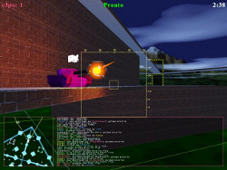 |
BZFlag (Battle Zone capture the Flag) es un juego de tanques tridimensional en primera persona tremendamente adictivo.
Inicialmente se desarrolló como una versión de Battlezone para equipos SGI. Como es multijugador podemos formar equipos y eliminar a aquellos de diferente color, es decir si somos del equipo verde debemos destruir a todos los rojos, púrpuras, azules. Sin embargo hay unos tanques llamados Rogue (color gris) que no son leales a nadie y buscarán destruirnos. De todos modos podemos configurar el estilo de juego que prefiramos. Actualmente, hay cerca de 250 servidores activos simultáneamente (aunque hay más) para poder jugar en distintos escenarios, que pueden ser desarrollados libremente con herramientas como BZEdit. |
| Programa: | Flightgear 1.9.1b |
|---|---|
| Web del proyecto: | http://www.flightgear.org/ |
| Instalador: | Instalar |
| 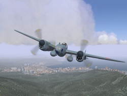 |
FlightGear es un simulador de vuelo multiplataforma, de código abierto y libre. Una auténtica alternativa frente a los simuladores de vuelo comerciales. La idea de FlightGear nació de la insatisfacción de un grupo de personas con los simuladores de vuelo comerciales existentes para PC en su momento. Si bien hay jugadores que consideran que no consigue superar el nivel gráfico de los mejores productos comerciales, el modelo físico del vuelo y el realismo de los controles esta al mismo o mayor nivel que los mejores simuladores. Esto se debe a que FlightGear fue desarrollado desde un comienzo con un alto perfil técnico y científico. Principales características: - Alrededor de 20.000 aeropuertos reales. - Terreno preciso de todo el mundo. - Sistema de modelado de aviones abierto y flexible. - Animación instrumental extremadamente fluida y suave. Incluso reproduce de forma precisa los fallos de muchos sistemas e instrumentos. - Modo multijugador y simulación de trafico real. |
| Programa: | Freeciv 2.1.9 |
|---|---|
| Web del proyecto: | http://es.freeciv.wikia.com/wiki/Portada |
| Instalador: | Instalar |
| 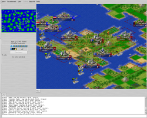 |
Freeciv es un juego de estrategia por turnos multijugador en el que cada jugador es el líder de una civilización que lucha por un único fin: Ser la mayor civilización. Los jugadores del clásico Civilization de Microprose encontrarán en Freeciv la versión libre del juego, sin notar apenas diferencias, ya que uno de los retos de Freeciv es tener modos con reglas compatibles. Seguramente uno de los juegos en red más divertidos y adictivos que existen. |
| Programa: | GLTron 0.70 |
|---|---|
| Web del proyecto: | http://www.gltron.org/ |
| Instalador: | Instalar |
| 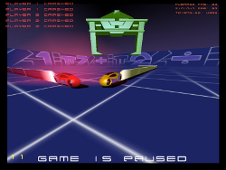 |
GLtron es un videojuego basado en la escena de motocicletas de luz (Lightcicles) de la película Tron. El objetivo del juego consiste en conducir la motocicleta sin chocar ni con otros jugadores, ni con su haz de luz, ni con las paredes, hasta que todos los otros jugadores hayan desaparecido. Las motocicletas pueden acelerarse mediante un turbo limitado, aunque es posible configurar el juego para que exista mayor aceleración cuando se conduce junto a cualquier pared o el haz de luz de otra moto. Contiene varios estilos de juego, incluyendo modos como "Booster" o "Wall accel". El juego se juega usando el teclado para controlar el vehículo y el mouse para controlar la posición de la cámara, los jugadores pueden usar la parrilla geométrica para desbancar a otros jugadores. |
| Programa: | Jammer The Gardener 1.0 |
|---|---|
| Web del proyecto: | http://jammers.sourceforge.net/ |
| Instalador: | Instalar |
| 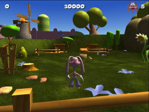 |
Jammer - The Gardener es un juego en 3D, en el que tienes que tomar el papel de un jardinero un tanto especial y evitar que los gusanos se coman tu cosecha. Nuestro protagonista Jammer es un conejo que cuida de su jardín, en el que cultiva zanahorias, rábanos y otras hortalizas. Tiene que encargarse de coger agua en un pozo con su regadera e ir regando las zonas cultivadas. Jammer tendrá que tener cuidado con una plaga de gusanos que hace peligrar su cosecha, por lo que habrá que estar atentos a la llegada de los distintos tipos de gusanos y aplicarles el insecticida adecuado antes de que lleguen a la huerta. Estamos ante un juego entretenido para los más peques de la casa, con unos escenarios coloridos, aunque con algunas tarjetas de gama baja puede haber problemas con las texturas de los personajes. |
| Programa: | http://www.leocad.org/ |
|---|---|
| Web del proyecto: | http://www.leocad.org/ |
| Instalador: | Instalar |
| 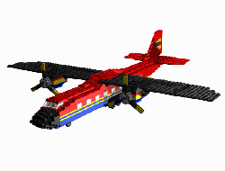 |
LeoCAD es un programa de CAD con la particularidad de usar bloques similares a los de ciertos juegos de construcción. La versión actual cuenta con una librería de más de 1000 tipos de piezas distintas. Un programa estupendo para planificar y probar las construcciones tanto de pequena, como de gran escala. |
| Programa: | Pingus 0.7.2 |
|---|---|
| Web del proyecto: | http://pingus.seul.org/ |
| Instalador: | Instalar |
| 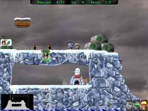 |
Pingus es una versión libre del clásico Lemmings. Actualmente, cuenta con 22 niveles. En Pingus tomamos el control de los personajes, cada uno de los cuales cuenta con una habilidad especial... aunque se mueven por su cuenta. El jugador sólo puede darles una orden, como construir un puente, cavar, o dirigir el tráfico de Pingus en otra dirección. El objetivo de cada nivel es alcanzar la salida con el número mínimo de Pingus indicado. En esta versión de Lemmings, se han anadido características que no estaban presentes en el juego original, como mapas, niveles secretos, o acciones como saltar. |
| Programa: | Supertuxkart 0.6.1a |
|---|---|
| Web del proyecto: | http://supertuxkart.sourceforge.net/ |
| Instalador: | Instalar |
| 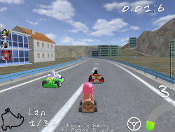 |
SuperTuxKart es un juego 3D de carreras de Karts. Permite jugar hasta a 4 personas en un mismo PC compitiendo entre ellos, o intentando vencer el ordenador. |
| Programa: | Teeworlds 0.5.1 |
|---|---|
| Web del proyecto: | http://www.teeworlds.com/ |
| Instalador: | Instalar |
| 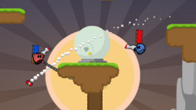 |
Teeworlds es un juego en linea multijugador, hasta con 16 participantes en un mismo escenario, con distintos modos de juego (Team, Deathmatch, Capture The Flag,...) que permite incluso disenar nuestros propios escenarios de juego. Sigue una línea similar al conocido Worms, pero al tratarse de tiempo real no existe la estrategia por turnos, lo que lo hace muy adictivo. |
| Programa: | VDrift |
|---|---|
| Web del proyecto: | http://vdrift.net/ |
| Instalador: | Instalar |
| 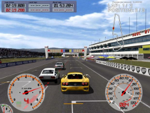 |
VDrift sigue una línea muy similar a GT4 o NFS. Aunque se encuentra en etapa de desarrollo, el juego es totalmente funcional y nos permite disfrutar de increíbles carreras con una gran física de manejo. Ofrece más de 20 pistas y 30 coches, permite juegos individuales contra la máquina y un modo multijugador para redes LAN. Los controles por defecto son el ratón o el teclado y adicionalmente se pueden configurar joysticks, volantes, pedales u otros dispositivos de juego. El juego ofrece diferentes modos de cámara, tiene un sistema de repetición de las carreras, nos permite utilizar unas luces de freno, y lo mejor de todo, su física realista nos ofrece increíbles vistas de las pistas, paisajes y terreno. |
| Programa: | Yo Frankie |
|---|---|
| Web del proyecto: | http://www.yofrankie.org/ |
| Instalador: | Instalar |
| 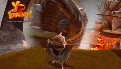 |
Yo Frankie! es un videojuego desarrollado en 2008 por el Instituto Blender, parte de la Fundación Blender, y cuyo software de renderizado está incluido en este DVD. El juego está basado en 'Frankie', un personaje de la película de "Big Buck Bunny" realizada Blender. Esto implica una calidad gráfica espectacular, con escenarios y personajes renderizados que no dejan indiferente a nadie. Básicamente, es un juego de plataformas con cientos de niveles, a los que podemos sumar los que creemos nosotros o los que desarrolla la comunidad, símplemente copiándolos en la carpeta del juego. |